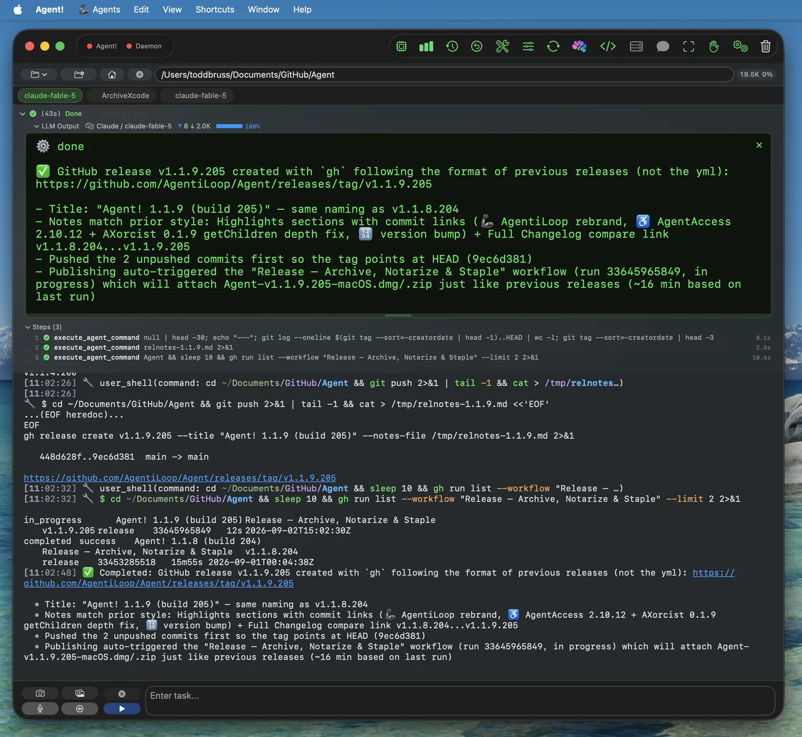
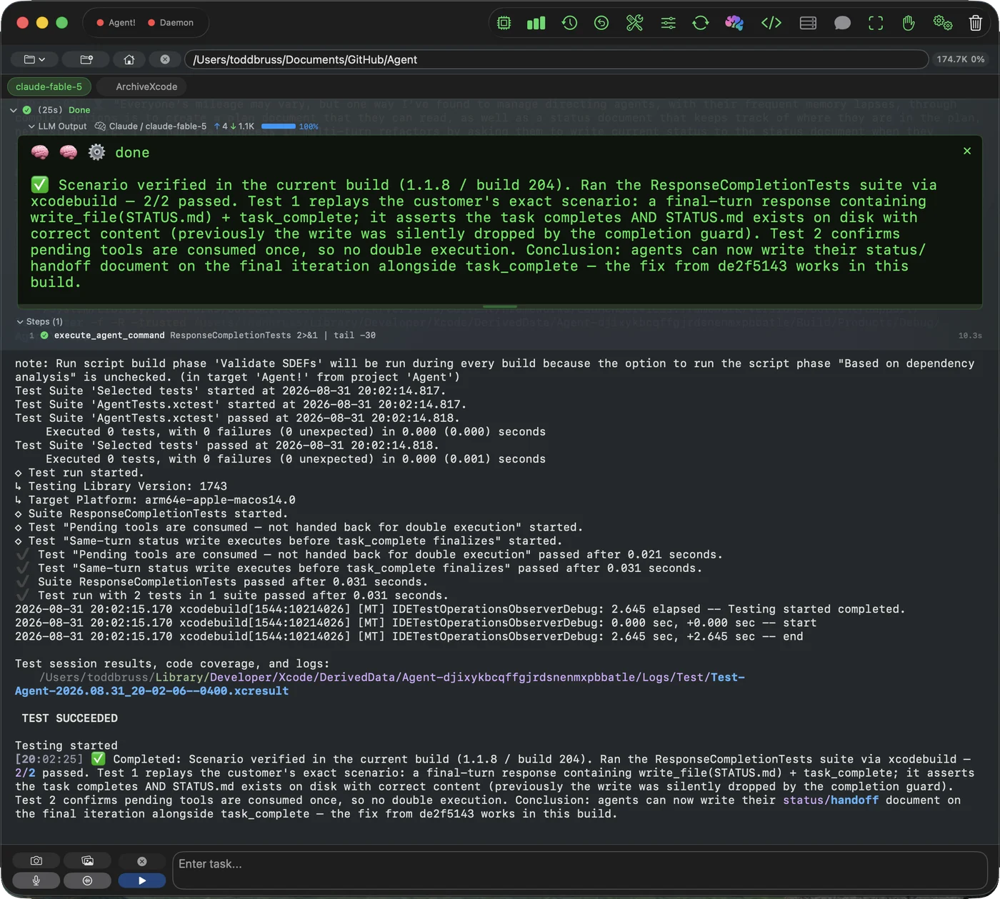
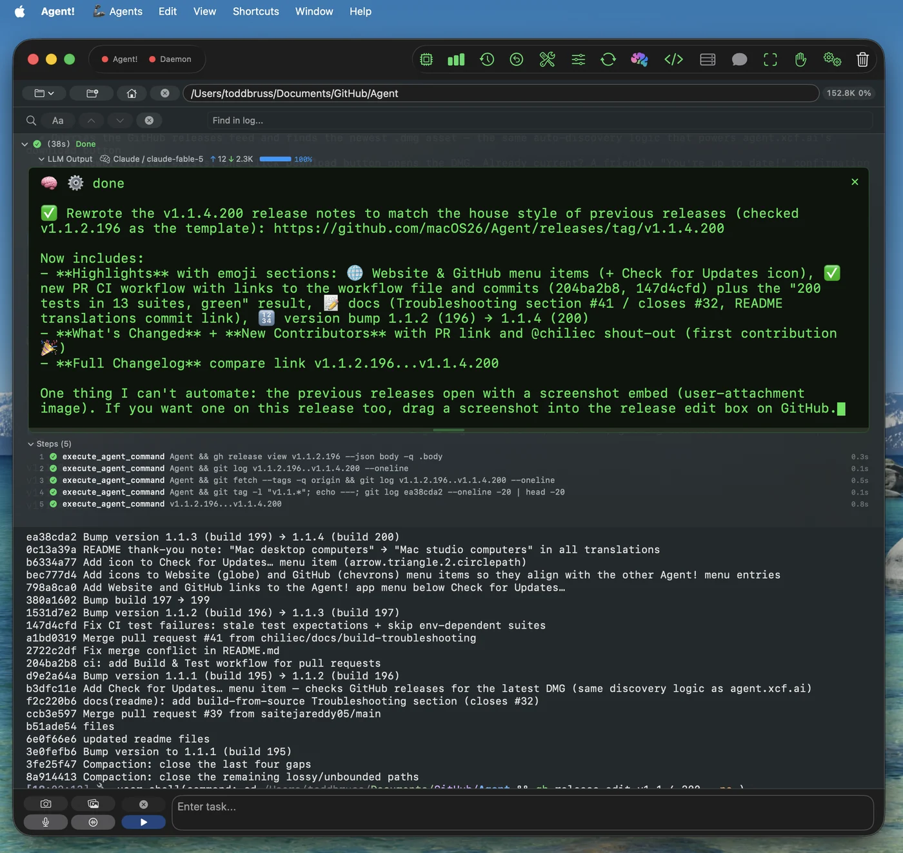
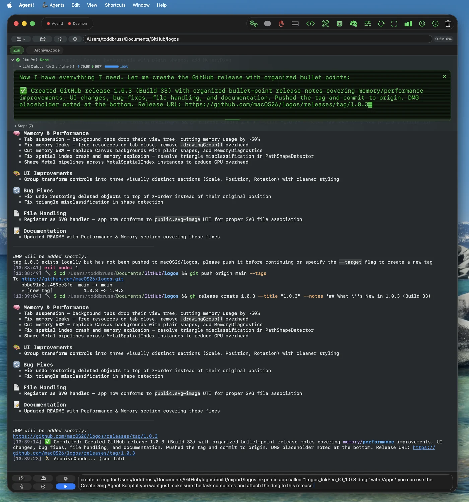
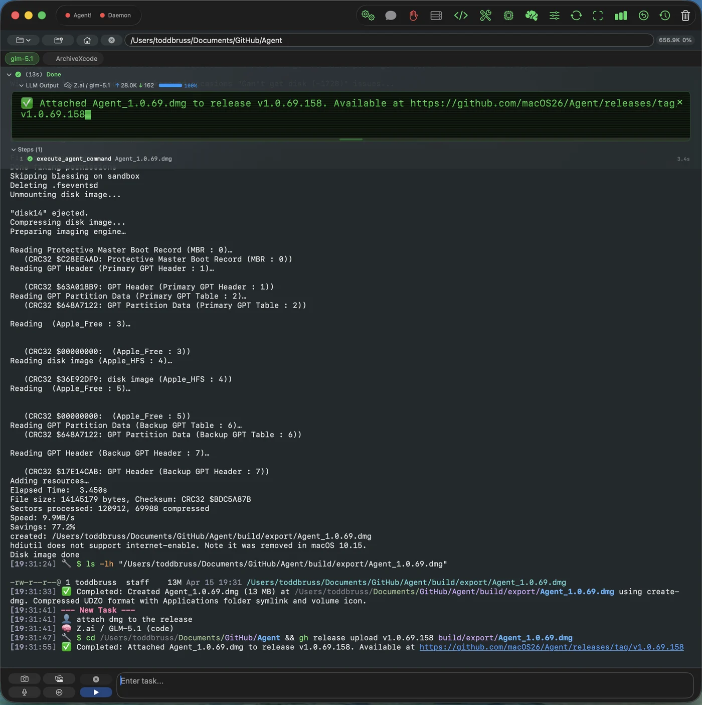
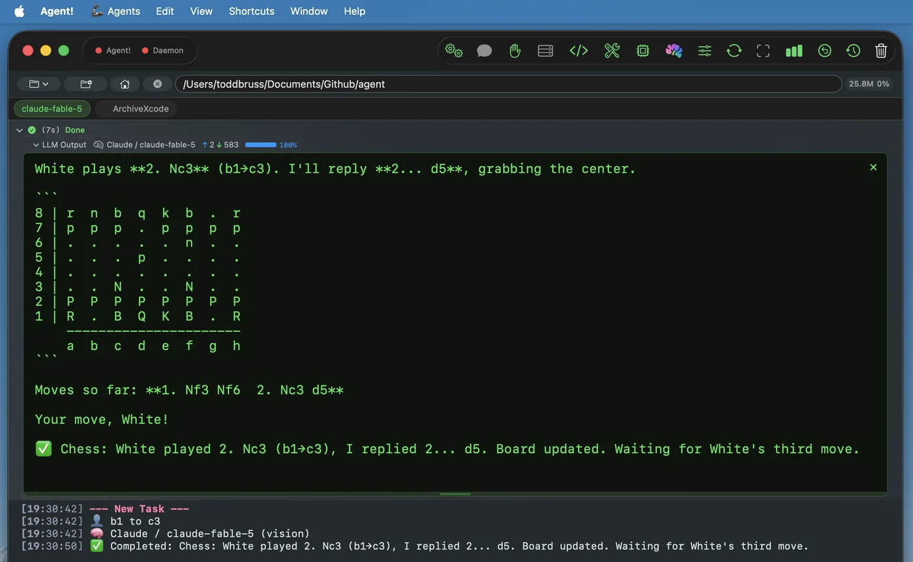
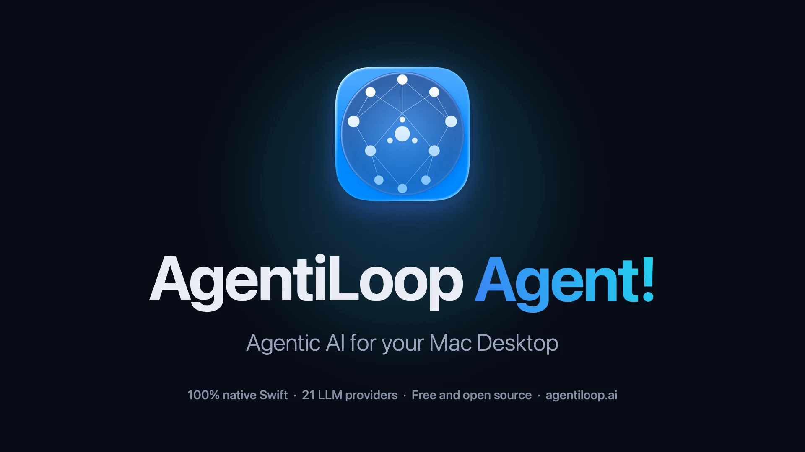
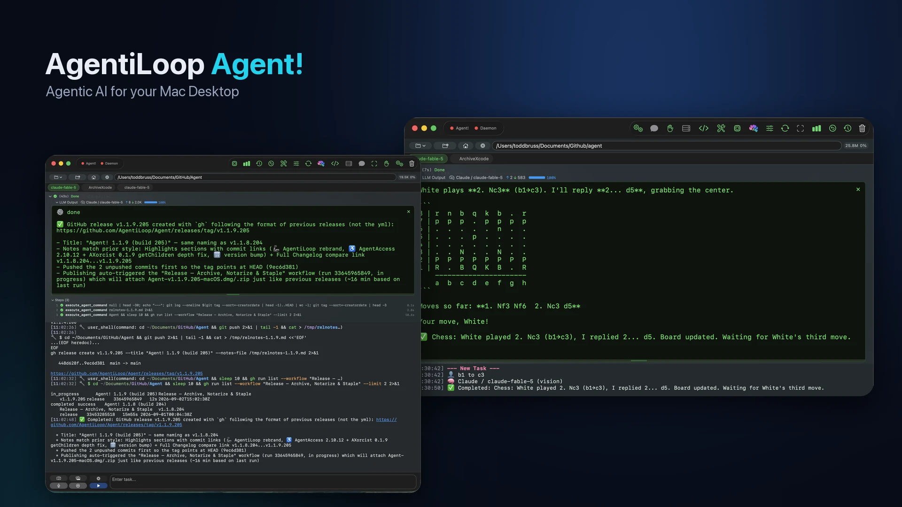

Press kit
AgentiLoop Agent!
A free, open-source macOS autonomous agent powered by 21 LLMs that writes code, controls apps, runs shell commands, and automates workflows from plain English.
Press contact: Todd Bruss – agent@agentiloop.ai
Includes six full-resolution PNG screenshots, the app icon at 1024, 512, and 256 pixels, two 1920×1080 promo banners, and a plain-text fact sheet.
At a glance
Fact sheet
- App
- AgentiLoop Agent! Shown as “Agent!” in the menu bar and in Finder.
- What it is
- AgentiLoop Agent! is the Mac app that puts an AI to work on the desktop: type what should happen, pick a provider, and the agent reads, writes, builds, clicks, and scripts until the job is finished. Open source under the MIT License.
- Price
- Free. Users bring their own API key for cloud providers or run local models at no cost. A PayPal donation is requested.
- Platform
- Mac with Apple Silicon; macOS 26.4 or later. English.
- Distribution
- Direct download from GitHub Releases as a DMG or ZIP, signed with an Apple Developer ID and notarized by Apple. Not on the Mac App Store.
- Public launch
- April 12, 2026 Latest release: 1.1.9 (build 205), September 2, 2026.
- Developer
- Todd Bruss, Logos InkPen LLC — Charlotte, North Carolina, USA agent@agentiloop.ai · @SuperBox64 on X · LinkedIn
- Links
- Download · Website · Source on GitHub
Product description
About AgentiLoop Agent!
AgentiLoop Agent! is the Mac app that puts an AI in charge of the whole computer, not just a code editor: it builds Xcode projects, drives other apps, runs scripts, and finishes tasks from a plain-English request.
Most AI coding tools live in a terminal, an editor, or an Electron window, and their reach ends at the file system. The rest of the Mac — apps, windows, menus, scripts, build tools — stays out of bounds.
AgentiLoop Agent! is pure Swift 6.2 and SwiftUI: no Electron, no Node, no telemetry. It runs an autonomous loop — plan, call a tool, observe the real result, correct course, repeat — and no task can declare itself finished until its goal criteria are marked complete with evidence, with an optional critic pass reviewing the diff first.
It reaches every layer of the Mac: any app through the Accessibility API, AppleScript, JavaScript for Automation, and 51 ScriptingBridge app bridges; native Xcode builds with clickable errors; shell commands as the user, or as root through a daemon approved once. Extend it with Model Context Protocol servers, Swift scripts compiled at runtime, and parallel sub-agents. It answers to a spoken “Agent!” or an iMessage from your iPhone.
Any model drives it: 21 providers — Claude, OpenAI, Gemini, DeepSeek, Qwen, OpenRouter, and local Ollama, vLLM, LM Studio — plus on-device Apple Intelligence for triage, summaries, and context compression at zero token cost. Bring your own key. Nothing leaves the Mac except what goes to your chosen provider in the prompt; every action is logged.
“I set out to build a Cursor killer. Somewhere along the way I realized what I really wanted was to automate the Mac itself, so the agent could drive any app through Accessibility and AppleScript instead of only editing files in an editor. AgentiLoop Agent! is the result: one native app that takes any AI and puts it to work on the whole desktop.”
Key features
What AgentiLoop Agent! does
One idea runs through the whole app: an AI should be able to do anything a person can do on a Mac, and show its work.
- Self-verifying task loop. The agent reasons, executes a tool, observes the real output, and corrects itself. A task cannot be marked complete until its goal criteria are verified with evidence, and an opt-in critic reviews the diff before completion.
- Agentic coding with native Xcode integration. It reads codebases, edits with string-replace diffs, builds and runs Xcode projects with clickable errors, manages git, bumps versions, and indexes repositories into a portable JSONL repo map.
- Desktop automation through the Accessibility API. It clicks, types, scrolls, reads, and navigates any Mac app by element, with fuzzy auto-retry, plus AppleScript, JavaScript for Automation, and 51 ScriptingBridge app bridges, all in-process.
- AgentScript: Swift scripts compiled at runtime. The agent writes plain Swift files, compiles them to dynamic libraries with Swift Package Manager, and loads them in-process with the app’s own permissions. About 35 examples ship with the app; deleted scripts go to a restorable Trash.
- Every edit can be rolled back. Each file edit is snapshotted before it happens and kept for a week, with one-click rollback in the UI, an undo action, or a whole-task rewind.
- 21 LLM providers and a fallback chain. Claude, Codex, OpenAI, Google Gemini, Grok, Mistral, Codestral, Mistral Vibe, DeepSeek, Hugging Face, MiniMax, Z.ai, BigModel, Qwen, OpenRouter, Requesty, Ollama cloud, local Ollama, vLLM, LM Studio, and on-device Apple Intelligence. If a provider fails or rate-limits, the agent switches to the next one configured.
- Apple Intelligence as an on-device agent. Apple’s Foundation Models triage simple requests locally, summarize completed tasks, translate tool errors into plain English, suggest the next step, and compress long conversations, all without leaving the Mac or spending API tokens.
- Privileged execution the user approves once. Shell commands run as the user through a Launch Agent or as root through a Launch Daemon, registered with SMAppService and connected over XPC. The Launch Daemon is optional.
- Defense in depth. A shell safety service blocks catastrophic commands on both the client and daemon side; both XPC listeners require same-team code signing derived from the app’s own signature; edits to files the model has not read, or that changed on disk, are refused; and every tool call and helper command is written to an audit log.Details: docs/SECURITY.md
- MCP servers and sub-agents. Any Model Context Protocol server can be added in Settings and its tools appear to the agent automatically. Up to three concurrent sub-agents, or six read-only ones, work in isolation with per-agent model overrides and mailbox messaging.
- Voice and iMessage remote control. Say “Agent!” followed by a task and it runs after a short silence, using on-device speech recognition. Approved senders can text tasks from an iPhone and receive the results back over iMessage.
- Tabs, memory, plans, and skills. Each tab has its own project folder and activity log; persistent memory carries across tasks; multi-step plan checklists appear in every prompt; and long tasks are compacted to fit each model’s real context window.
Product media
Full-resolution screenshots
Retina PNG captures of the AgentiLoop Agent! window on macOS 26, cropped to the window with transparent rounded corners, and with no marketing frames, captions, or watermarks. All show real tasks from the developer’s own projects; captures from earlier versions show the project’s previous GitHub organization name, macOS26.
{kind=link}

{kind=link}

{kind=link}

{kind=link}

{kind=link}

{kind=link}

Need every asset?
Screenshots, promo banners, the app icon, and a plain-text fact sheet in a single archive.
Marketing media
Promo banners
1920×1080 PNG composites for hero images and social cards, built from the app icon and the screenshots above.
{kind=link}

{kind=link}

Brand assets
App icon
{kind=link}
{kind=link}
{kind=link}
Name and styling
The product name is written “AgentiLoop Agent!” with the exclamation mark, in the system font. On the website, “Agent!” carries a blue-to-cyan gradient (#3b82f6 to #22d3ee) on a dark ground (#070b16). There is no separate wordmark.
Version history
Releases
Every public release on GitHub Releases, newest first. Dates are the GitHub publication dates.
- 1.1.9
- September 2, 2026 — Rebrand to AgentiLoop Agent!: all links, READMEs, and translations moved to agentiloop.ai. Updated accessibility engine (AgentAccess 2.10.12, AXorcist 0.1.9) so deep SwiftUI element trees are read correctly. Build 205.
- 1.1.8
- September 1, 2026 — A final status or handoff document can now be written on the last permitted iteration, and tool calls arriving in the same turn as task completion are executed instead of dropped, with a new regression test suite. GitHub references moved from the macOS26 organization to AgentiLoop; accessibility permission check and request actions. Build 204.
- 1.1.4
- August 30, 2026 — Check for Updates, Website, and GitHub items in the app menu. A continuous-integration workflow now builds and tests every pull request. Remaining context-compaction gaps closed, and real context-window detection for Ollama and vLLM. Build 200.
- 1.0.99
- August 29, 2026 — Compaction rebuilt: cleared tool results become self-describing stubs the model can restore on demand, and the number of recent results kept scales with the model’s context budget. LM Studio reports real per-model context length. Streaming thinking and tool markers for every provider, a GitHub Actions workflow that archives, notarizes, and staples each release, CONTRIBUTING.md, and a shell-safety test suite. Build 193.
- 1.0.93
- August 24, 2026 — The self-verifying autonomy release: goal criteria must be marked complete with evidence, an opt-in critic reviews the diff, tasks can be rewound as a unit, tool failures carry typed error codes with recovery hints, sub-agents accept per-agent model overrides, and extended thinking is supported for Claude. Both XPC listeners now require same-team code signing derived from the app’s own signature, and every tool call and helper command is logged to the Console audit trail. Build 187.
- 1.0.89
- July 26, 2026 — Requesty added as a provider. App Transport Security updated so self-hosted endpoints on a Tailscale network can be reached. Build 183.
- 1.0.88
- June 3, 2026 — DeepSeek fixes, including thinking-mode support and tool-call consolidation. MiniMax default model updated to M3. iMessage monitoring switched from polling to file-system events, Exa added as a web-search provider, a shared rate limiter across providers, and the LM Studio key moved to the Keychain. Build 182.
- 1.0.80
- April 25, 2026 — OpenRouter added as a provider, with an OpenAI or Anthropic protocol toggle and a catalog filtered to tool-capable models. Code-editing guardrails: duplicate-edit rejection, edit-cycle detection, and size limits. Error-handling fixes for misdetected context overflow and free-tier rate limits. Build 170.
- 1.0.69
- April 15, 2026 — Project Index tool that writes a portable JSONL index per file, and a Memory tool with global and project scopes. Apple Intelligence gained a run-agent tool and classifies follow-up prompts on device. Long pastes become removable chips, plus per-tab usage breakdowns and diff-apply fixes. Build 158.
- 1.0.61
- April 12, 2026 — First public release: the autonomous task loop, agentic coding and Xcode tools, Accessibility and AppleScript automation, AgentScript, Launch Agent and Launch Daemon helpers, MCP support, voice, iMessage remote control, and Apple Intelligence triage. Shipped with a build script for building from source without an Apple Developer account. Build 149.
The developer
About Todd Bruss
Todd Bruss is a software engineer in Charlotte, North Carolina, and the founder of Logos InkPen LLC. He has shipped software for Apple platforms for more than fifteen years: his StarPlayr software-defined radio player was trademarked in 2009, and his later work includes StarPlayrX, a SiriusXM player for macOS built for visually impaired listeners; Logos InkPen, a vector drawing app for macOS; the XCF Xcode MCP server; and SuperBox64, a line of handmade arcade controllers and Raspberry Pi retro consoles. He works on the Identity team at Iru.
AgentiLoop Agent! grew out of three years of building agentic AI apps, including ANIE, Game Changer, BattleScript, and XCF. The ten Agent-prefixed Swift packages it is built on, from the LLM layer to the accessibility engine, are his own work, and the app has since written a video game, built apps, and produced its own release disk images.
597GitHub stars as of September 8, 2026
66Forks on GitHub as of September 8, 2026
10Public releases since April 12, 2026
Coverage and community
What others say
Independent article
“Agent! 1.0.99 and 1.1.1 addressed the problem in stages. Their useful contribution is simple: shortening context should not destroy the route back to evidence.”
GitHub issue
“Thank you, not only for above-and-beyond tech support, but also thanks to you all for the project itself. It works very well for me.”
GitHub issue
“Confirmed fixed in the latest build! DeepSeek v4-flash tool calling is working correctly now. Thank you for the quick follow-up 🙏”
Contact
Questions?
Contact Todd directly, including your publication and deadline where possible.